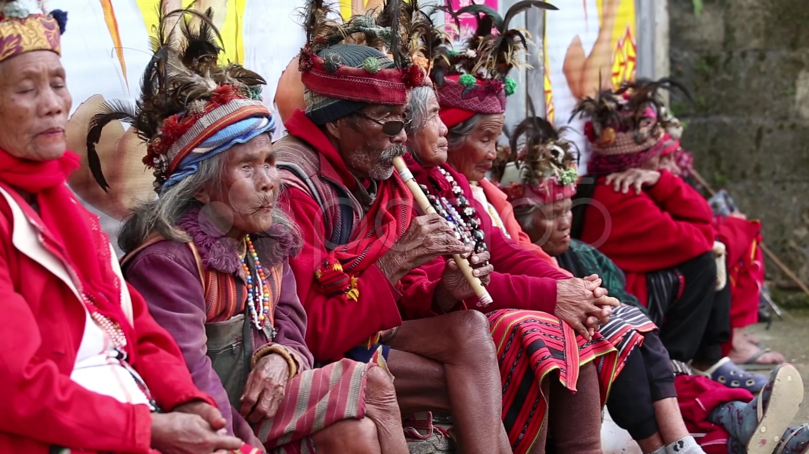

Ifugao Province
Ifugao Province is a landlocked province in the Philippines located in the Cordillera Administrative Region. It is known for its rice terraces, which are carved into the mountains and are considered to be one of the Eighth Wonders of the World. The Ifugao people are a group of indigenous people who have inhabited the region for centuries. They are known for their rich culture and traditions.
History
Pre-colonial era
The Ifugao people are believed to have descended from the Austronesians who migrated to the Philippines from Southeast Asia around 2,000 years ago. The Ifugao people developed a complex system of agriculture, including the construction of the rice terraces, which allowed them to grow rice on the steep slopes of the mountains. The Ifugao people also developed a rich culture and traditions, including their own language, religion, and art.
Spanish colonial era
The Spanish arrived in the Philippines in the 16th century and began to colonize the islands. The Ifugao people were initially resistant to Spanish rule, but they eventually submitted to Spanish authority. The Spanish attempted to convert the Ifugao people to Christianity, but they were largely unsuccessful. The Spanish also imposed taxes on the Ifugao people, which led to a number of rebellions.
American colonial era
The Americans arrived in the Philippines in the late 19th century and defeated the Spanish in the Spanish-American War. The Americans continued to rule the Philippines until 1946. The Americans introduced a number of changes to Ifugao society, including the introduction of schools and hospitals. The Americans also built roads and bridges that made it easier for people to travel in and out of the province.
Post-colonial era
The Philippines gained independence from the United States in 1946. Since then, Ifugao Province has been a part of the Philippines. The province has continued to develop and grow, and it is now a popular tourist destination.
Culture
Ifugao culture is based on a deep respect for nature and the spirits of their ancestors. The people believe that they are connected to everything in the natural world, and they have developed a complex system of rituals and ceremonies to maintain this connection. The Ifugao people are also skilled artisans, and they are known for their wood carvings, pottery, and weaving.
Ifugao people
Etiquettes
When visiting Ifugao Province, it is important to be respectful of the local culture and traditions. Here are a few tips:
- Dress modestly. Cover your shoulders and knees, and avoid wearing revealing clothing.
- Be respectful of elders. Elders are held in high esteem in Ifugao culture, and it is important to treat them with respect.
- Avoid pointing or using harsh language. Ifugao people are generally polite and respectful, and it is important to reciprocate this attitude.
- Ask permission before taking photos. It is considered rude to take photos of people without their permission.
- Do not touch people or their belongings without permission. Ifugao people are generally private, and it is important to respect their privacy.
- Offer gifts. If you are invited to someone's home, it is polite to bring a gift of food or drink.
- Be patient. Ifugao people are generally laid-back and relaxed, so don't expect things to happen quickly.
By following these tips, you can help ensure that you have a positive and respectful experience when visiting Ifugao Province.
Additional Information
- The Ifugao people are a hospitable people, and they are always happy to welcome visitors to their province.
- There are a number of festivals and celebrations that take place in Ifugao Province throughout the year.
- The province is home to a number of stunning natural attractions, including Banaue Rice Terraces, Mount Pulag, and Kiangan Rice Terraces.
- Ifugao Province is a great place to go for hiking, trekking, and camping.
I hope this information is helpful.